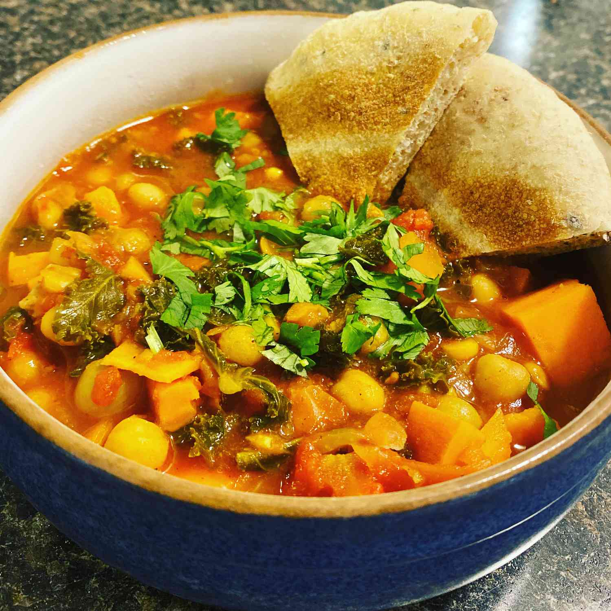

Rockin' Moroccan Stew
Return to Odin Recipes

Description
Moroccan vegetable stew with sweet potatoes, chickpeas and ginger
Modified from Reader's Digest Recipe
Ingredients
- 2 tsp olive oil
- 1 cup onions, chopped
- 1/2 cup celery, diced
- 1/2 cup green pepper, chopped
- 1 tsp garlic, minced
- 3 cups vegetable broth
- 3 cups sweet potatoes, peeled and cubed
- 1 can (19 oz/540 mL) diced tomatoes
- 1 can chickpeas, drained and rinsed
- 1 tbsp lemon juice
- 2 tsp gingerroot, grated
- 1 tsp ground cumin
- 1 tsp curry powder
- 1 tsp ground coriander
- 1 tsp chili powder
- 1/2 tsp salt
- 1/4 tsp black pepper
- 1/4 cup raisins (optional)
- 2 tbsp peanut butter
- 2 tbsp fresh cilantro, chopped
Instructions
- Heat olive oil in a large nonstick saucepan over medium-high heat
- Add onions, celery, green pepper and garlic
- Cook and stir until vegetables being to soften, about 3 minutes
- Add all remaining ingredients, except raisins, peanut butter and cilantro
- Bring to a boil and simmer on low, covered for 20 minutes
- Stir in raisins, peanut butter, and cilantro
- Mix well. Simmer for 5 more minutes
- Serve hot.